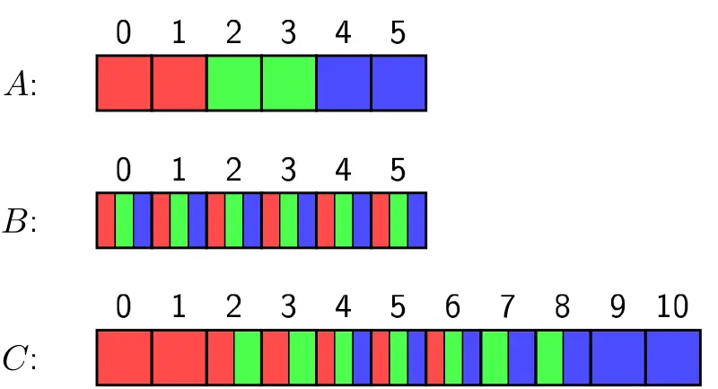
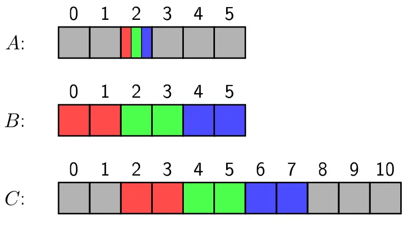
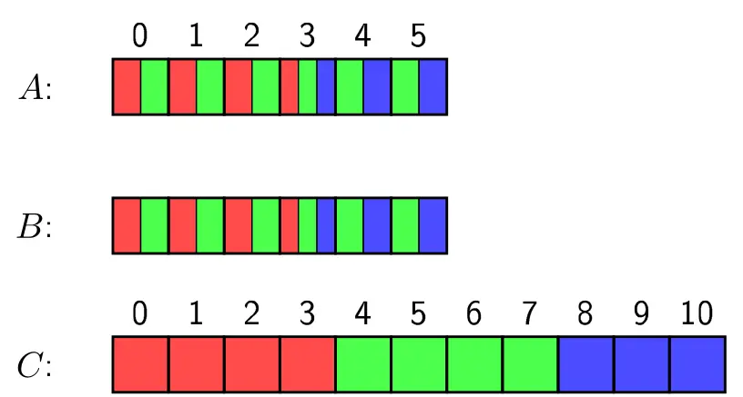
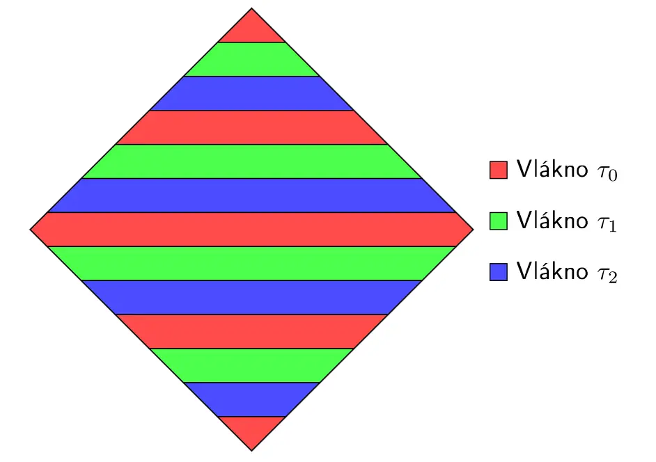
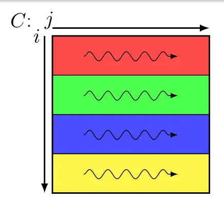
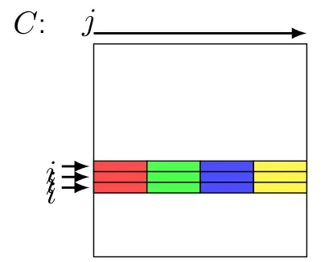
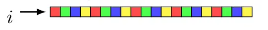

Programování nad sdílenou pamětí, programový model OpenMP, datový a funkční paralelismus, synchronizace vláken, vícevláknové algoritmy (násobení polynomů, násobení matic a vektorů, řazení).
- na jednom uzlu (operačním systému) nad jednou sdílenou pamětí
- fork-join model — master vlákno
- v OpenMP označujeme oblasti, které se budou provádět paralelně
- direktivy, např.
#pragma openmp parallel private(x1, x2) shared(s3) num_threads(5) -
- knihovní funkce
- klauzule: shared, private, firstprivate,
default(shared|none),reduction(op:seznam)—op in {+, *, -, &, ^, |, &&, ||} threadprivate(seznam)— hodnoty proměnných jsou vázány na id vlákna napříč bloky se stejným thread count- datový paralelizmus — paralelizace cyklů pro nezávislé iterace (negarantované pořadí)
- schedule
- static (default chunk size je
) - dynamic (default chunk size je 1) “prosím, dej mi práci”
- guided — dynamic, ale když už není dost, dělí se rovnoměrně mezi vlákna
- runtime — environment variable
OMP_SCHEDULE - auto — kompilátor nebo runtime to zvolí samo
- static (default chunk size je
- lastprivate v paralelním cyklu zaručuje, že “sekvenčně” poslední iterace volí hodnotu
- schedule
- funkční paralelismus — vytvoří tasky
#pragma omp task- taskwait čeká na skončení předchozích
if(podminka)— je-li true, pak se vytvoří task, jinak se provede rovnoufinal(vyraz)— je-li true, pak nová úloha bude finální, další se nevytváří#pragma omp single— provedeno jen jedním threadem
- synchronizace
barriermastersingle— jakékoli vlákno, ale provede se jednoucritical— kritická sekce (pouze jedno vlákno, ostatní čekají)atomic—read/write/update(read-modify-write,i+=1)/capture(read-modify-read-writemy_ptr = ptr; ptr += BLOCK_SIZE)flush()taskwait
- algoritmy
- násobení polynomů
C[i+j]=A[i]*B[j]- vnější cyklus

- zapisování do
musí být atomicky
- vnitřní cyklus

- falešné sdílení, nevyhnutelné
- implicitní bariéra
rozdělit rovnoměrně 
- výše statické rovnoměrné
- lépe staticky dle velikosti cache / počet procesorů

- násobení matic MVM
s += A[i][k] * B[k][j]C[i][j] = s- vnější (
) cyklus 
- pouze jedna bariéra
- disjunktní oblasti
- vnitřní (
) cyklus - blokově

- pro dostatečně velké
není falešné sdílení
- cyklicky

- falešné sdílení
- blokově
- vnitřní (
) cyklus - paralelní redukce součtu
- bariéry dominují
- násobení řídké matice vektorem SpMVM
- COO — velmi neefektivní, atomic update a nevyváženost, falešné sdílení
- CSR
- v row-indices mám prefixový součet -> vyvažuji počet prvků, aby byl co nejblíž
, lze binárním vyhledáváním
- v row-indices mám prefixový součet -> vyvažuji počet prvků, aby byl co nejblíž
- řazení
- QuickSort
- Lomuto (pivot začíná vlevo)
- lepší Hoare
- MergeSort
- 2-cestné slučování — ta matice
-cestné slučování — ten algoritmus hledání splitterů (L, R, m). Viz vizualizace
- QuickSort
- násobení polynomů